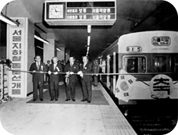

서울교통공사
사이버 역사관
공사이미지
경영정보
인권경영
적극행정
관련법령
산업현황
서울교통공사 사이버역사관

1970년대
1971.04.12 1호선 착공식
1971.08.15 1호선 개통 기념식
19714 1호선 개통 기념 승차권
1974 1호선 영업 개시
1980년대
1980.02.29 3,4호선 건설 기공식
1984.05.22 2호선 완전개통 열차
1985.10.18 3,4호선 전구간 개통식
1986.04 마그네틱 승차권 도입

1990년대
1990 승차권 발매기 도입
1990.06.15 5호선 기공식
1995.11.15 5호선 강동구간 개통식
1996.08.12 5호선 영등포구간 개통식
2000년대
2000.01.01 뉴밀레니엄 첫 열차 운행
2000.08.01 7호선 전구간 개통식
2000.08.07 6호선 봉화산 개통식
2010년대
2010.02.18 3호선 연장구간 개통식
2014.02.26 수송인원 400억명 돌파
2015.03.27 9호선 2단계 개통식
2017.05.31 서울교통공사 출범
현재
2024.08.15 서울지하철 개통 50주년
사진으로 보는 변천사